Chicago Built Environment
This page features my photography and observations of Chicago's built environment.
Through delivering meals across the South and West sides, I began to notice how differently neighborhoods have developed.
Bronzeville
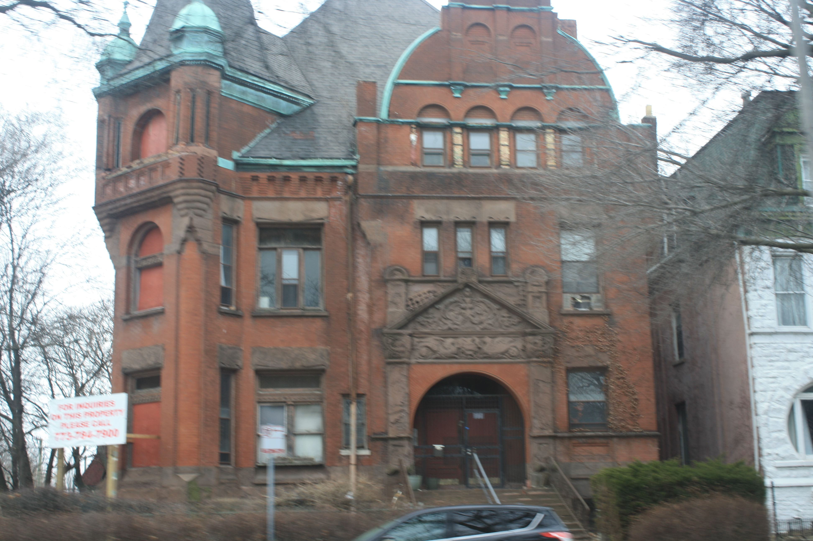
Photo 1: Mansion exterior.

Photo 2: Architectural detail.
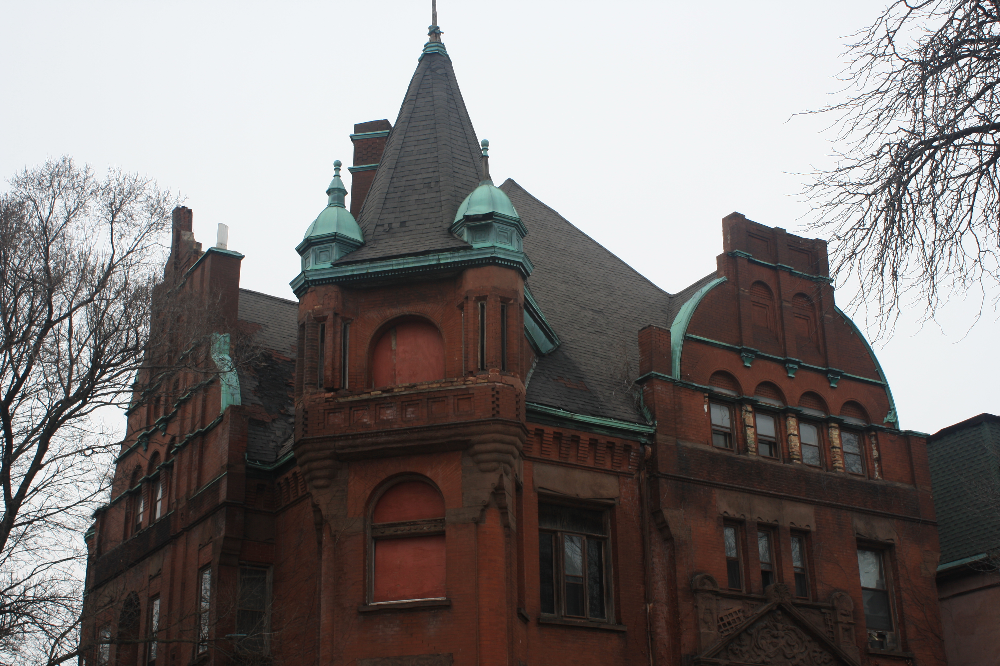
Photo 3: Another view of scale.
Bronzeville shows strong historical architecture but also uneven investment over time.
Stockyards
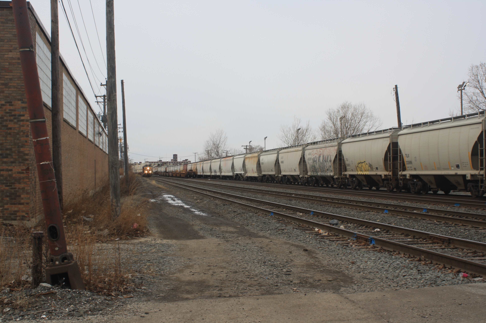
Photo 1: Train infrastructure supporting industry.
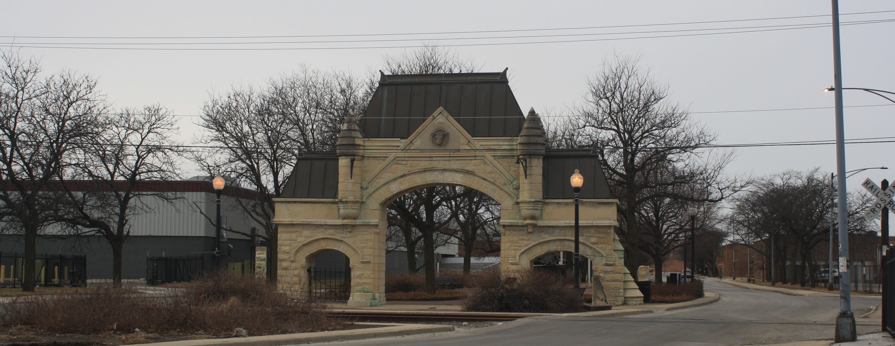
Photo 2: Entry gate marking industrial history.
The Stockyards landscape reflects Chicago’s industrial past and infrastructure built for production.
Englewood

Photo 1: Public school as community structure.
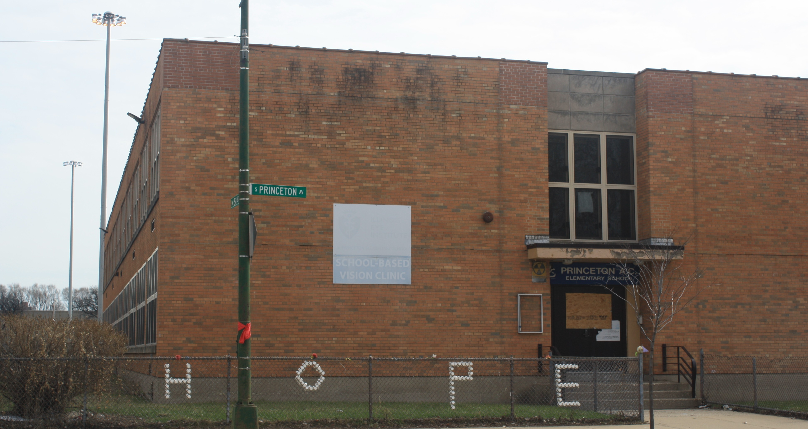
Photo 2: Another school building showing institutional presence.
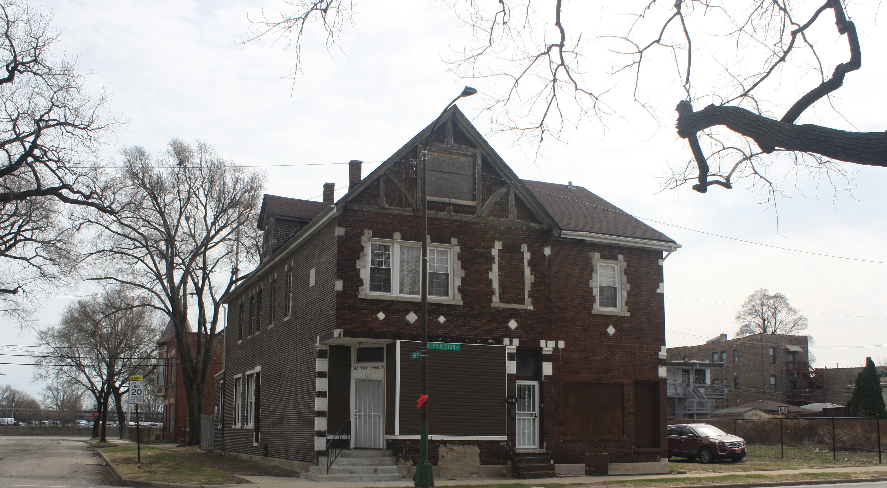
Photo 3: Church acting as a community anchor.

Photo 4: Religious architecture showing long-term neighborhood presence.

Photo 5: Playground showing community space but reduced activity.
Photo 6: Empty lot where buildings once stood.

Photo 7: Isolated building reflecting disinvestment.

Photo 8: Another isolated structure.

Photo 9: A third example of isolation.
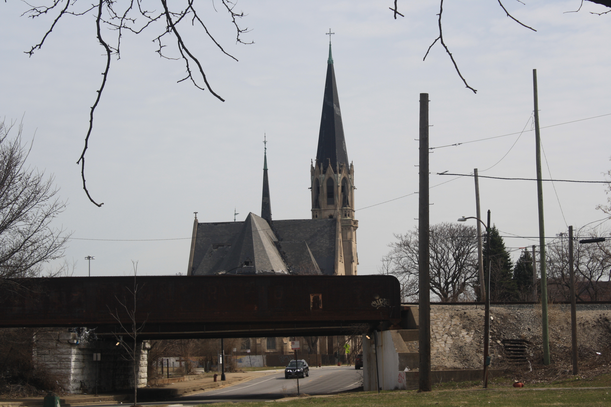
Photo 10: Dan Ryan corridor dividing the neighborhood.

Photo 11: Sidewalk showing reduced activity.

Photo 12: Another sidewalk view.

Photo 13: Streetscape showing gaps in the built environment.
Englewood shows some of the clearest evidence of disinvestment. Many buildings remain, but they are often isolated or surrounded by empty lots. Infrastructure like the Dan Ryan physically divides the neighborhood, and the built environment reflects long-term economic change. At the same time, schools, churches, and community spaces show that this is still a lived-in and active neighborhood, demonstrating both loss and resilience.
Pullman
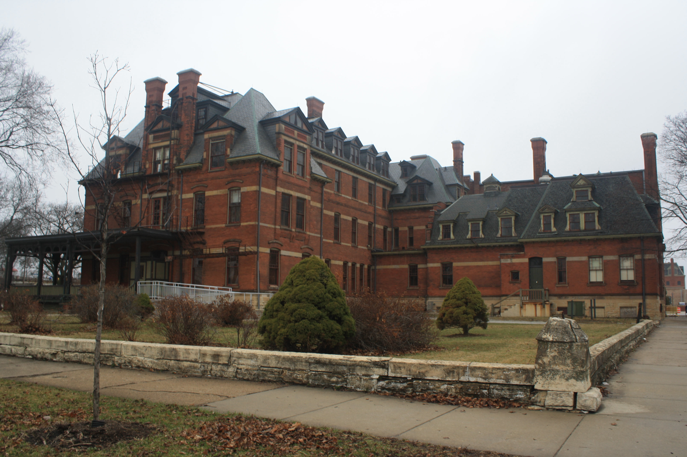
Photo 1: Mansion.
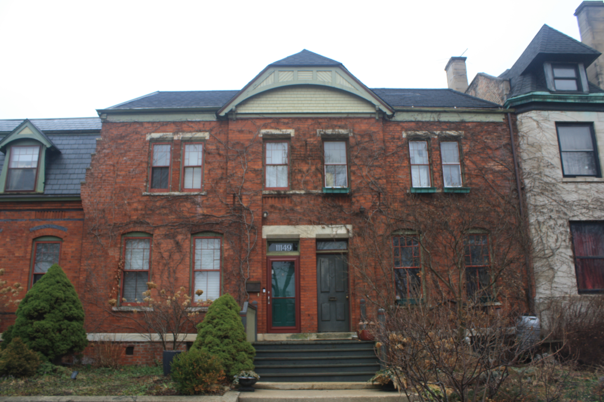
Photo 2: Rowhouse.
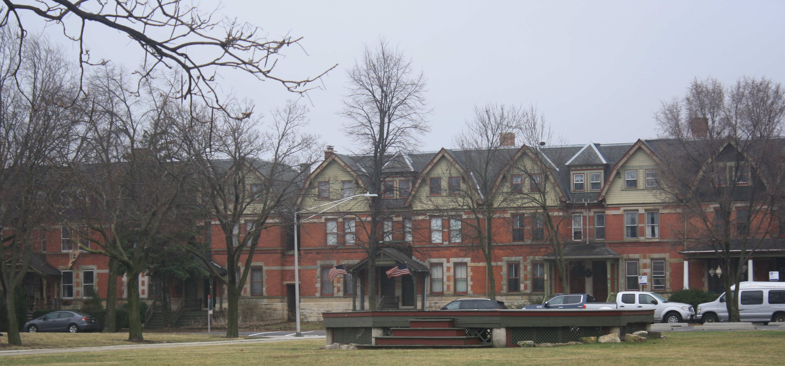
Photo 3: Rows of uniform housing.
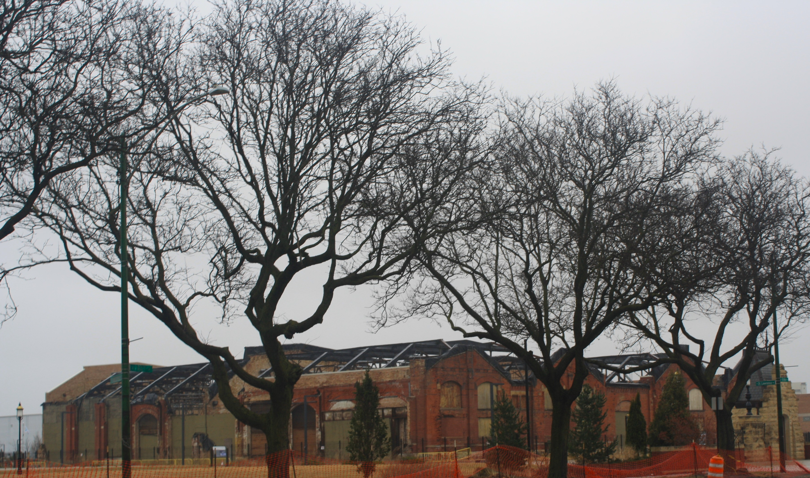
Photo 4: Industrial factory site.
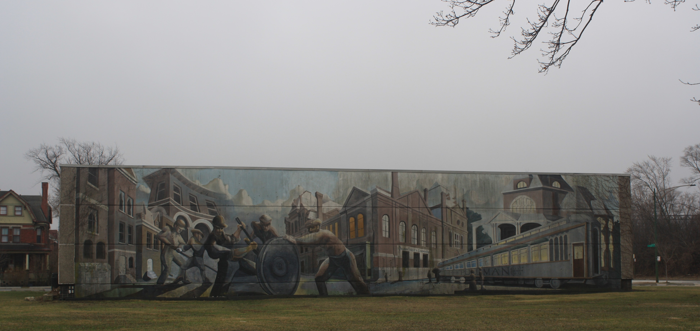
Photo 5: Mural reflecting identity and memory.
Pullman reflects planned industrial development, where housing and work were designed together.
Conclusion
Across neighborhoods, Chicago’s built environment reflects history, inequality, and resilience. From industrial infrastructure to empty lots and preserved architecture, the city shows how policy and economic change shape physical space over time.